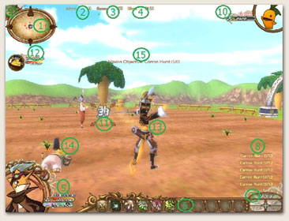

| |
| |
1. Mini Map - บอกตำแหน่งของสิ่งต่างๆที่เราสามารถปฏิสัมพันธ์ได้ โดยที่
สีแดง - ตำแหน่งของศัตรู
สีฟ้า – ตำแหน่งตัวละครPlayer จะปรากฏเมื่ออยู่ในฉากที่ไม่ใช่ภารกิจต่างๆ
สีเขียว - ตำแหน่งของNPCต่างๆ
Icon hero - Playerผู้อื่นๆและตัวเราที่ร่วมเดินทางกับเรา
2. Mana – ค่าพลังสำหรับการใช้ท่าพิเศษต่างๆ
3. Score – คะแนนที่ได้จากการทำภารกิจ
4.Time - เวลาที่ใช้ในการทำภารกิจ
5.ค่าพลังต่างๆของHero โดยแบ่งแยกต่างๆได้ดังนี้
แถบวงกลม – แถบค่าพลังชาร์จของท่าชาร์จตัวละคร แถบนี้จะวิ่งเมื่อมี
การกดชาร์จ
HP – แถบพลังชีวิตของตัวละคร จะเพิ่มมากขึ้นตามค่า Vit ใน Stat
MP – แถบพลังสำหรับใช้ท่าประเภทเวทมนต์ต่างๆ สามารถเพิ่มค่าMax
และฟื้นพลังไวขึ้นตาม ค่า Int ใน Stat
SP – แถบพลังใช้ท่าSkillต่างๆ ค่า SP จะเพิ่มมากขึ้นตามค่า Tal ใน Stat
6. Shortcut – สามารถคลิกขวาลากSkill หรือ emoticon ต่างๆ ลงมายัง
แถบ Shortcut มาใช้เพื่อความสะดวกได้
7. Menu – แถบรายการต่างๆ
Item – แสดงหน้าต่างที่แสดงค่าพลังตัวละครและที่เก็บของ
Skill – แสดงหน้าต่างรายการSkillต่างๆของตัวละครในสายอาชีพนั้นๆ
Quest – แสดงเป้าหมายภารกิจที่เราได้รับ รวมทั้ง Quest จาก NPC
Network – แสดงรายชื่อเพื่อน สมาชิกในกิลล์ และ Chat log
8. แถบChat Box – รวมข้อความต่างๆในตัวเกม ทั้งการพูดคุย ระบบ
ของเกม และเป้าหมายภารกิจ
9. รูปแสดงช่วงเวลา - ส่งผลต่อฉากเพื่อแสดงเวลากลางวันและกลางคืน
10. ค่าพลังเป้าหมาย – สามารถแสดงได้ทั้งศัตรู และเพื่อนๆเรา เปลี่ยนแปลงไปตามเป้าหมายที่เราเลือก
11. สัญลักษณ์ล็อคเป้าหมาย – เมื่อทำการล็อคเป้า จะขึ้นกรอบขึ้นมาให้เห็นดังภาพ
12. แถบพลังเพื่อน - จะปรากฏขึ้นตามจำนวนเพื่อนที่เข้าร่วมภารกิจด้วยกัน
13. ตัวละครที่เราควบคุมบังคับ |
 |
|